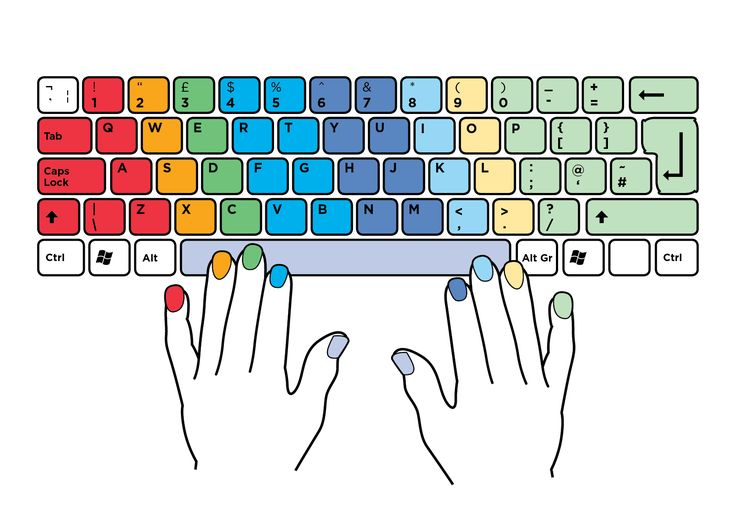

Tugas 1: Typing speed test
26 Agustus 2025
Pada tugas ini saya melakukan pengujian kecepatan mengetik menggunakan keyboard komputer. Untuk melakukan tes, saya memanfaatkan situs 10FastFingers.com yang secara khusus dirancang untuk mengukur kemampuan mengetik. Dari sini, saya bisa mengetahui seberapa cepat dan akurat saya dalam mengetik.
Baca selengkapnya